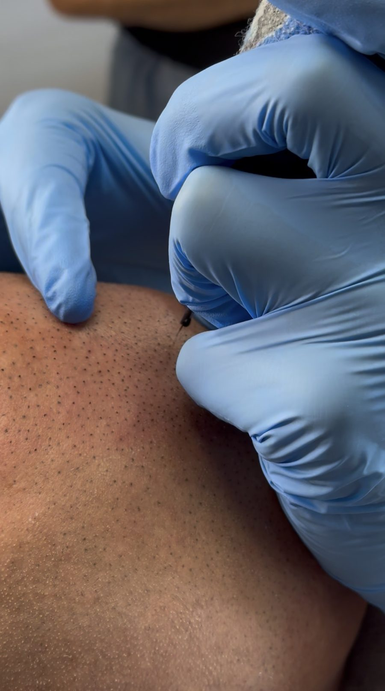
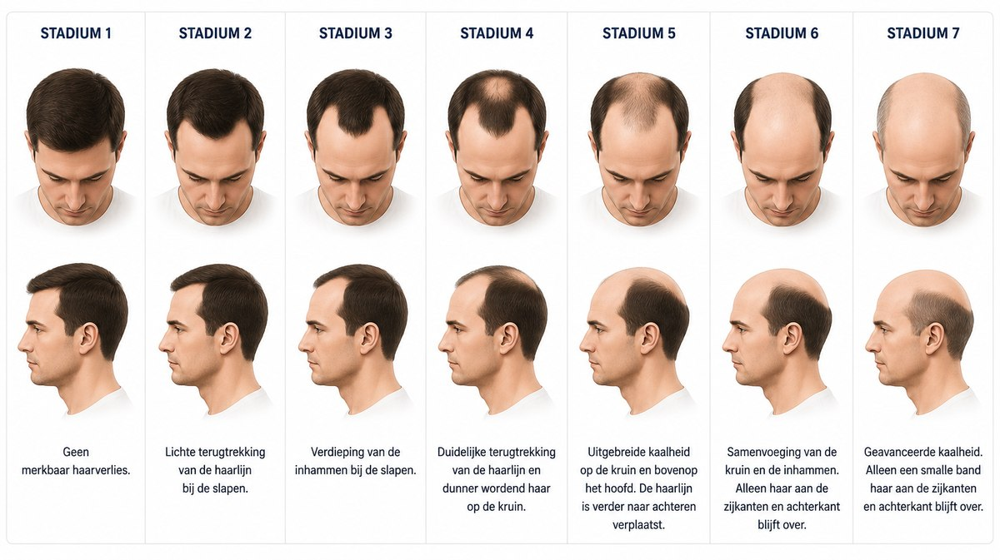

De meeste praktijken laten u eerst een formulier invullen voordat u een bedrag te zien krijgt. Ik vind dat onzin. U wilt weten of dit binnen uw bereik ligt vóórdat u ergens binnenloopt, dus hier is het antwoord meteen.
Een haar tattoo — oftewel scalp micropigmentatie — kost bij mij € 600 per zone. De meeste mensen hebben drie tot vier zones nodig, dus een volledig traject komt meestal uit tussen de € 1.800 en € 2.400.
Wilt u alleen uw haarlijn aangezet hebben, dan is één zone genoeg en betaalt u dus € 600. Dat is geen afgeslankte versie: het is gewoon een kleiner gebied.
Dat bedrag geldt voor de hele zone, ook als we die over meerdere sessies opbouwen. Een traject bouwen we namelijk in lagen op, met tijd ertussen. U betaalt niet per keer dat u op de stoel zit.
Micropigmentatie is oppervlaktewerk. Wat de tijd en het geld bepaalt, is hoeveel vierkante centimeter hoofdhuid er punt voor punt opgebouwd moet worden — niet hoe lang ik erover doe. Zou ik per uur rekenen, dan werd u gestraft als ik rustig werk en beloond als ik haast maak. Dat lijkt me de verkeerde prikkel.

Zit u rond stadium 2 of 3, dan gaat het vaak om de haarlijn en de inhammen: één tot twee zones. Vanaf stadium 5 komt de kruin erbij en loopt het op naar drie of vier. Iemand met een wijkende haarlijn heeft dus iets heel anders nodig dan iemand met een kale kruin, en dat verschil ziet u terug in de prijs.
Welke zones het bij u precies worden, tekenen we tijdens de intake samen op uw hoofd, zodat u ziet waar u voor betaalt. De volledige zone-indeling staat op de tarievenpagina, met een kaart waarop u elke zone kunt aanwijzen.
Ja. “Haar tattoo”, “hair tattoo”, “haarlijn tattoo”, “micro haarpigmentatie” en “haar tatoeëren” beschrijven allemaal dezelfde behandeling. In de praktijk heet het scalp micropigmentatie, afgekort SMP.
Maar het woord “tattoo” klopt eigenlijk niet, en dat is meer dan een woordenspel. Een haar tattoo is geen tatoeage. Een tatoeage gaat tot diep in de dermis, tot in de reticulaire laag, en blijft daar levenslang zitten. Micropigmentatie zit ondieper, in de bovenste lagen van de dermis — de papillaire laag — met pigment dat het lichaam in de loop van jaren weer afbreekt.
Dat is precies de bedoeling. Uw haarlijn op uw vijftigste hoort niet die van uw dertigste te zijn. Een echte tatoeage op uw hoofdhuid zou over twintig jaar nog even hard staan, in een kleur die dan nergens meer bij past. Vervaging is hier een ontwerpkeuze, geen gebrek.
Het heeft ook gevolgen voor de prijs op termijn: er komt na een paar jaar een opfrissessie bij. Reken daarop, dan is het geen verrassing.
Dat is een andere behandeling, en goedkoper: € 150 per zone per sessie. Hoofdhuidcamouflage is bedoeld voor mensen die nóg haar hebben, maar bij wie de hoofdhuid erdoorheen schijnt. Het neemt het contrast tussen huid en haar weg, in plaats van losse stoppels na te bootsen.
Verwar de twee niet op prijs alleen. Ze lossen verschillende problemen op. Welke van de twee bij u past, is de eerste vraag tijdens het consult — en dat consult is gratis.
Dit is het stuk waar ik eigenbelang bij heb, dus weeg het zo. Maar ik zie het te vaak om het weg te laten.
Een flink deel van mijn werk is correctie en herstel: pigment dat blauw of rood is uitgeslagen, puntjes die te groot zijn gezet en daardoor vlekkerig ogen, of een haarlijn die te laag en te recht is aangelegd en daardoor op een getekende lijn lijkt.
Dat herstellen kost altijd meer dan het in één keer goed laten doen. Soms is er eerst laserbehandeling nodig om het oude pigment te vervagen voordat er überhaupt opnieuw gewerkt kan worden. Dan betaalt u twee keer, plus een paar maanden wachttijd.
Vraag dus niet alleen naar de prijs. Vraag naar foto’s van werk dat minstens een jaar oud is. Verse foto’s zien er altijd goed uit; het is de veroudering die het vakmanschap verraadt.
Het consult en de intake zijn gratis, en daar hangt geen verplichting aan. We bekijken uw hoofdhuid, bespreken wat haalbaar is en tekenen de zones op. Als ik denk dat u beter af bent met iets anders — of met niets — dan zeg ik dat.
De definitieve prijs staat vast na die intake, en u weet die vóórdat we beginnen. Geen nacalculatie achteraf. Bij een traject van meerdere sessies is betaling per sessie bespreekbaar, na een aanbetaling.
Een haar tattoo kost € 600 per zone. De meeste mensen zitten op drie tot vier zones, dus tussen de € 1.800 en € 2.400 voor een volledig traject. Alleen een haarlijn is één zone. Hoofdhuidcamouflage is een andere behandeling en kost € 150 per zone per sessie. Het consult kost niets.
Wat u uiteindelijk betaalt hangt af van hoeveel hoofdhuid er bedekt moet worden — en dat weten we pas als we samen gekeken hebben.
Tijdens een gratis consult bekijken we uw hoofdhuid, tekenen we de zones op en hoort u een vast bedrag. Zonder verplichting.
Plan een consult